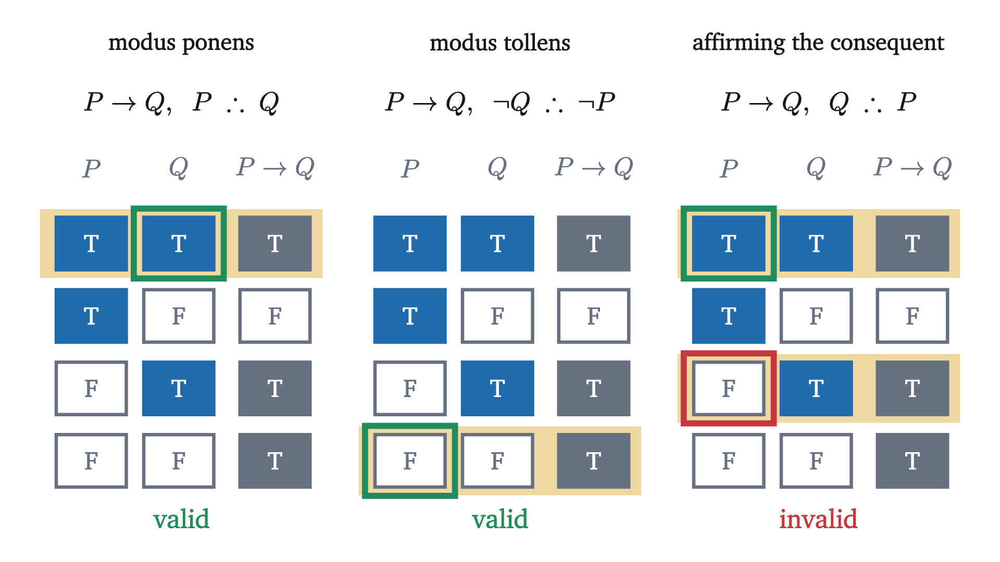

If-then statements: converse and contrapositive
When is "if P then Q" true? One table answers it, shows why the contrapositive says the same thing and the converse does not, and solves the four-card puzzle.
Four cards lie on a table. Each has a letter on one side and a number on the other, and the sides you can see show A, K, 4 and 7. Someone makes a claim about these four cards: “If a card has a vowel on one side, then it has an even number on the other.” You want to find out whether the claim is true, and you want to turn over as few cards as possible.
Pause and try
Which cards must you turn over? Write your answer down before opening this one.
Show answerHide answer
The A and the 7. Most people say “A and 4”, or only “A”. When the psychologist Peter Wason set this puzzle in the 1960s, fewer than one in ten of his subjects chose correctly, and the result has been repeated many times since. If you picked the 4 you are in good company, and the rest of this page is about why the 4 can tell you nothing while the 7 can sink the claim. We come back to the cards at the end.
The puzzle is hard because “if ... then” in conversation carries suggestions that are no part of what it says. To reason with it reliably we have to fix exactly when “if $P$ then $Q$” counts as true, in the way the previous lesson did for “and”, “or” and “not”. Recall the method. A statement is a sentence that is true (T) or false (F). A connective is defined by a truth table, which gives the truth value of the compound in each of the four combinations of truth values of $P$ and $Q$. Two compounds are logically equivalent, written $\equiv$, when their columns agree in every row.
When is a promise broken?
Your aunt says: “If you pass the exam, then I will buy you a bike.” Let $P$ be “you pass” and $Q$ be “she buys you a bike”. There are four ways things can go. In which of them has she lied?
She lied in exactly one case: you passed and no bike came. If you failed, she is free to buy the bike anyway or to keep her money, and either way nobody can call her a liar. A statement has to be true or false, with nothing in between, so a promise that was not broken counts as true.
In the bottom two rows, where the hypothesis is false, the conditional is said to be vacuously true. These rows bother everyone at first. They make “if $2 + 2 = 5$ then Paris is in Italy” a true statement. A table is a choice, and this choice needs defending. The promise was one argument. Here are two more that do not depend on it.
The argument from general statements
Everyone accepts that this is true: for every integer $n$, if $n$ is a multiple of 4, then $n$ is even. A statement about every integer is true only if it holds for each one. So put some integers in and see which rows of the table they land in.
The number 8 is a multiple of 4 and even: row one. The number 6 is not a multiple of 4 but is even: row three. The number 7 is neither: row four. If the conditional were false in row three or in row four, the general statement would be false at $n = 6$ or at $n = 7$, and we would have to say that “multiples of 4 are even” is refuted by the number 7. Nobody wants that. The one row that no integer occupies is row two, and that is the row the statement forbids.
The argument by elimination
Rows one and two are not in dispute: T, then F. There are four ways to complete the column, and three of them are something else that we already have.
| rows 3 and 4 | full column | what it is |
|---|---|---|
| F, F | T, F, F, F | $P \land Q$: “if” would mean “and” |
| F, T | T, F, F, T | unchanged when $P$ and $Q$ swap: “if $P$ then $Q$” would mean “if $Q$ then $P$” |
| T, F | T, F, T, F | the column of $Q$ alone: the hypothesis would do nothing |
| T, T | T, F, T, T | the definition |
“If” is weaker than “and”, it has a direction, and its hypothesis matters. Only the last line keeps all three.
You might object that with $P$ false there is no connection between $P$ and $Q$ at all. That is correct, and the table never claimed one. The arrow says nothing about causes or reasons.
In symbols this is two equivalences, both read off the columns:
The column of $\lnot P \lor Q$ is $\text{F} \lor \text{T}$, $\text{F} \lor \text{F}$, $\text{T} \lor \text{T}$, $\text{T} \lor \text{F}$, which is T, F, T, T. The second follows from the first by De Morgan’s law, $\lnot(A \lor B) \equiv \lnot A \land \lnot B$.
Pause and try
Write the negation of “if it rains, then the match is canceled”. Is it “if it rains, then the match is not canceled”?
Show answerHide answer
The negation is “it rains and the match is not canceled”, $R \land \lnot C$. The other sentence, $R \to \lnot C$, is a different statement: on a dry day both $R \to C$ and $R \to \lnot C$ are vacuously true, so one cannot be the negation of the other.
A picture: one region inside another
Many conditionals are about a whole collection of things: all integers, all cards. For those there is a picture. Draw a region for the things that make $P$ true and another for those that make $Q$ true. “For every $x$, if $P$ holds for $x$ then $Q$ holds for $x$” says that no point lies inside the first region and outside the second, which means the first region sits inside the second.
The picture also shows what the conditional does not say. There may be plenty of points in the outer region that are not in the inner one, where $Q$ is true and $P$ is false. Keep this picture in mind for the next two sections.
Converse, inverse and contrapositive
From one conditional you can make three others by swapping the two parts, negating them, or both. Try all three on the statement about multiples of 4, for an integer $n$.
- Swap: “if $n$ is even, then $n$ is a multiple of 4.” False at $n = 6$.
- Negate both: “if $n$ is not a multiple of 4, then $n$ is not even.” False at $n = 6$.
- Swap and negate: “if $n$ is not even, then $n$ is not a multiple of 4.” True for every $n$.
Pause and try
“If it is raining, then the ground is wet.” Form the same three variations. Which of them must be true whenever the original is? For each one that need not be, describe a situation where the original is true and the variation is false.
Show answerHide answer
Swap: “if the ground is wet, it is raining”. Negate both: “if it is not raining, the ground is not wet”. Both fail when a sprinkler is on under a clear sky, although the original still holds. Swap and negate: “if the ground is dry, then there is no rain”. This one must be true whenever the original is, because rain on dry ground is exactly what the original rules out.
In the picture of regions, the contrapositive says that everything outside the outer region is outside the inner one, which is the same drawing described from the outside. The converse says that the outer region sits inside the inner one, which is a different drawing.
“Only if”, “necessary”, “sufficient”, “if and only if”
English has several other ways of saying $P \to Q$, and they are easy to read backwards.
Only if. “You may vote only if you are at least 18” does not promise a vote to every adult. It says that voting without being 18 does not happen: if you vote ($V$), then you are at least 18 ($E$). So “$P$ only if $Q$” means $P \to Q$. The word “if” introduces the hypothesis, and the words “only if” introduce the conclusion.
Sufficient and necessary. When $P \to Q$ is true, we say $P$ is sufficient for $Q$, because having $P$ is enough to get $Q$. We also say $Q$ is necessary for $P$, because without $Q$ there is no $P$ (this is the contrapositive). Being a multiple of 4 is sufficient for being even and not necessary, as 6 shows. Being even is necessary for being a multiple of 4 and not sufficient. In the picture, the inner region is the sufficient condition and the outer region the necessary one.
If and only if. When both directions hold we say so with a new connective.
For example, an integer is even if and only if its last digit is even. To prove an “if and only if” you must prove two conditionals, one in each direction, and a common error is to prove one and stop.
Valid and invalid arguments
An argument has premises and a conclusion. Its form is valid if the conclusion is true in every row of the truth table in which all the premises are true. Three forms involving a conditional come up constantly.

Modus tollens is modus ponens applied to the contrapositive. Affirming the consequent is modus ponens applied to the converse, which is why it fails. “If it rains the ground is wet; the ground is wet; so it rained” forgets the sprinkler. There is a fourth form, denying the antecedent (from $P \to Q$ and $\lnot P$, infer $\lnot Q$), which is invalid by the same row three.
The four cards again
The rule on the table is $P \to Q$ with $P$: “the card has a vowel on its letter side” and $Q$: “the card has an even number on its number side”. By the KEY statement, the only thing that can break the rule is a card that is a vowel and odd. So a card needs turning exactly when its hidden side could complete that combination.
Go through the cards as rows of the table. The A has $P$ true, so it is in row one or row two, and row two is the bad one: turn it. The K has $P$ false, so it is in row three or four, both vacuously true: leave it. The 4 has $Q$ true, so it is in row one or three, both true: leave it. The 7 has $Q$ false, so it is in row two or four, and row two is the bad one: turn it.
Turning the A is modus ponens, and turning the 7 is modus tollens. Choosing the 4 is affirming the consequent: it treats the rule as if it also said “an even number has a vowel behind it”, which is the converse.
The difficulty is in the abstraction more than in the logic. In 1982 Richard Griggs and James Cox gave students the same puzzle as a bar scene: each card is a customer, with a drink on one side and an age on the other, showing beer, cola, 22 and 16, and the rule is “if a person is drinking beer, then the person must be over 19”. About three quarters of their subjects correctly checked the beer drinker and the 16-year-old. The table for $\to$ is what everyone already uses when the content is familiar.
Worked examples
What the arrow does not mean
The arrow is not “causes” and not “and then”. “If the moon is made of cheese, then $2 + 2 = 4$” is true, with no link between the parts. In mathematics this rarely does harm, because almost every conditional that matters sits inside a “for every”: for every integer $n$, if ... then .... There the vacuous rows are the cases the theorem is not about, and the next lesson, on quantifiers, makes that precise.
Parentheses matter more with $\to$ than with $\land$ or $\lor$. When $P$, $Q$, $R$ are all false, $(P \to Q) \to R$ is $\text{T} \to \text{F}$, which is F, while $P \to (Q \to R)$ is $\text{F} \to \text{T}$, which is T.
Stepping back
One row of one table did all the work. A conditional forbids “hypothesis true, conclusion false” and forbids nothing else. From that came vacuous truth, the equivalence with the contrapositive, the failure of the converse, the two valid argument forms, and the answer to the cards. When a conditional confuses you, ask what would refute it.
Check yourself
Which statement is logically equivalent to “if a shape is a square, then it is a rectangle”?
Problems
Problems 1 to 3 repeat the moves of the lesson, 4 to 6 combine them, and 7 and 8 go further.
Problem 1
Compute the column of $\lnot P \to Q$ and identify it as a connective you already know. Then translate “I will go unless it rains” using it.
Show solutionHide solution
In the rows (T, T), (T, F), (F, T), (F, F) the hypothesis $\lnot P$ is F, F, T, T. A conditional with a false hypothesis is true, so the first two rows give T. Row three is $\text{T} \to \text{T}$, which is T, and row four is $\text{T} \to \text{F}$, which is F. The column T, T, T, F is that of $P \lor Q$. “I will go unless it rains” says: if it does not rain, I will go, $\lnot R \to G$, which is $R \lor G$: it rains or I go.
Problem 2
For a triangle $T$, consider “if $T$ is equilateral, then $T$ is isosceles” (an isosceles triangle has at least two equal sides). State the converse, inverse, contrapositive and negation, and say which of the five statements are true for every triangle $T$.
Show solutionHide solution
Original: true for every triangle, since three equal sides include two equal sides. Converse: “if $T$ is isosceles, then $T$ is equilateral”; false for the triangle with sides 5, 5, 3. Inverse: “if $T$ is not equilateral, then $T$ is not isosceles”; false for the same triangle. Contrapositive: “if $T$ is not isosceles, then $T$ is not equilateral”; true for every triangle, being equivalent to the original. Negation: “$T$ is equilateral and $T$ is not isosceles”; false for every triangle.
Problem 3
Write each as a conditional $A \to B$, saying what $A$ and $B$ are. (a) “You get dessert only if you finish dinner.” (b) “Passing the final is sufficient for passing the course.” (c) “Oxygen is necessary for fire.”
Show solutionHide solution
(a) “Only if” introduces the conclusion: if you get dessert, then you finished dinner. It does not promise dessert to everyone who finishes. (b) The sufficient condition is the hypothesis: if you pass the final, then you pass the course. (c) The necessary condition is the conclusion: if there is fire, then there is oxygen. Equivalently, by the contrapositive, no oxygen means no fire.
Problem 4
Four cards each have a number on one side and a letter on the other, and they show 3, 8, E and T. The rule is “if a card has an odd number on one side, then it has a vowel on the other”. Which cards must be turned over to test the rule?
Show solutionHide solution
Here $P$ is “the number is odd” and $Q$ is “the letter is a vowel”. The rule can be broken only by a card with an odd number and a consonant. The 3 has $P$ true: a consonant behind it would break the rule, so turn it. The 8 has $P$ false: leave it. The E has $Q$ true: whatever number is behind it, the rule holds for this card, so leave it. The T has $Q$ false: an odd number behind it would break the rule, so turn it. Answer: 3 and T.
Problem 5
Decide whether each argument is valid, and name its form. (a) “If the alarm rings, there is smoke or heat. The alarm is ringing. There is no smoke. So there is heat.” (b) “If a number is divisible by 6, it is divisible by 3. The number 9 is divisible by 3. So 9 is divisible by 6.”
Show solutionHide solution
(a) Valid. From $A \to (S \lor H)$ and $A$, modus ponens gives $S \lor H$. A true “or” needs at least one true part, and $S$ is false, so $H$ is true. (b) Invalid: this is affirming the consequent. Both premises are true and the conclusion is false, which no valid form allows.
Problem 6
Show that $P \to (Q \to R) \equiv (P \land Q) \to R$ without writing eight rows, by finding the rows where each side is false.
Show solutionHide solution
The left side is false exactly when $P$ is true and $Q \to R$ is false, and $Q \to R$ is false exactly when $Q$ is true and $R$ is false. So the left side is false in the single row $P$ true, $Q$ true, $R$ false. The right side is false exactly when $P \land Q$ is true and $R$ is false, which is the same row. The two columns have their only F in the same place, so they are equal.
Problem 7
Let $a$ and $b$ be integers. Prove by contrapositive: if $ab$ is odd, then $a$ is odd and $b$ is odd.
Show solutionHide solution
The contrapositive is: if it is not the case that both are odd, then $ab$ is not odd. By De Morgan’s law, “not ($a$ odd and $b$ odd)” is “$a$ is even or $b$ is even”. Suppose $a$ is even, say $a = 2k$. Then $ab = 2(kb)$ is even. If instead $b$ is even, $b = 2m$, then $ab = 2(am)$ is even. In both cases $ab$ is not odd, which proves the contrapositive and therefore the statement.
Problem 8
Prove that $\bigl((P \to Q) \land (Q \to R)\bigr) \to (P \to R)$ is a tautology. Then explain what is wrong with this chain: “If it is a dog, it is a mammal. If it is a cat, it is a mammal. So if it is a dog, it is a cat.”
Show solutionHide solution
Suppose some row made the formula false. Then in that row the hypothesis $(P \to Q) \land (Q \to R)$ is true and the conclusion $P \to R$ is false. The second says $P$ is true and $R$ is false. Since $P \to Q$ is true and $P$ is true, $Q$ is true (modus ponens). Since $Q \to R$ is true and $Q$ is true, $R$ is true. But $R$ is false. No such row exists, so the formula is a tautology. The chain about dogs has premises $D \to M$ and $C \to M$, which do not have the shape $P \to Q$, $Q \to R$: the middle term $M$ is the conclusion of both. To chain them one would need $M \to C$, the converse of the second premise, and that is false.